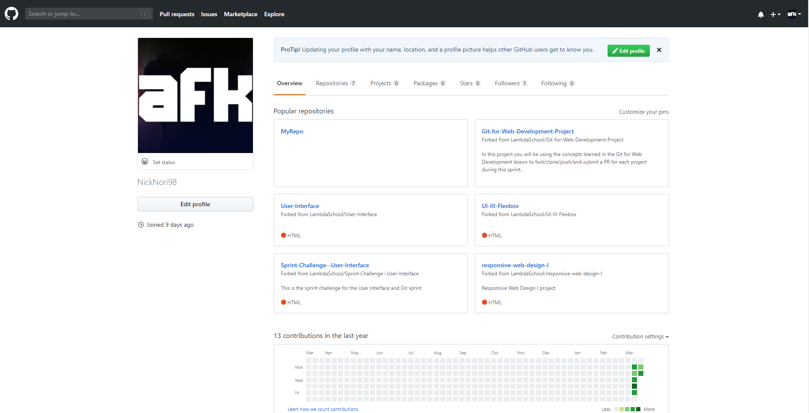

Extra Info About Me
Im presuing Lambda school in hopes of passing and getting a job. Before Lambda I had no job, hated college, didn't know what I wanted to do, and felt like a bum. I hope to pass so I can move out because my moms annoying and I just want freedom. My dogs are my top prior in life right now besides Lambda. I have two dogs ones a teacup Chihuahua his names Cece hes 10 years old. My second dog is Toby hes 13 years old and hes a Dingo mix hes a fluffer that gets scared of storms.
In my free time I love to chill and watch anime when I dont really want to do anything. Its a nice break for my hands. I also enjoy playing games with friends mostly competetive games.